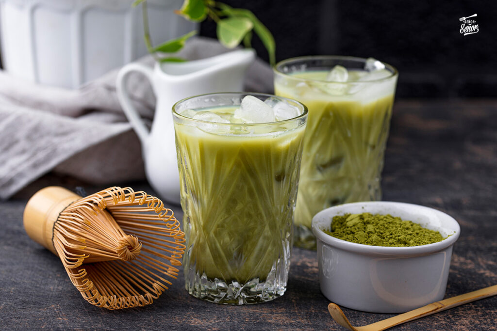

Café
El café es una bebida que se obtiene mediante el percolado de agua caliente a través de los granos tostados y molidos de los frutos de la planta del café (cafeto); es altamente estimulante por su contenido de cafeína,una sustancia psicoactiva.
Matcha
Es un polvo finamente molido de té verde especialmente procesado a partir de hojas de té cultivadas a la sombra. El cultivo a la sombra le da al matcha su característico color verde brillante y su fuerte sabor umami. El matcha se consume típicamente suspendido en agua caliente.
Té
El té es la infusión de las hojas y brotes de la planta del té (Camellia sinensis). La popularidad de esta bebida es solamente sobrepasada por el agua. Su sabor es fresco, ligeramente amargo y astringente; este gusto es agradable para mucha gente.